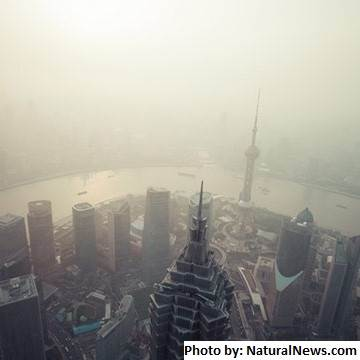

What is Pollution?
Pollution is a common term that people used to indicate that it has contaminants into the natural environment that caused the adverse change.
Pollution of air, water and soil require millions of years to recoup.
Industry and motor vehicle exhaust are the number one pollutants. Heavy metals, nitrates and plastic are toxins responsible for pollution. While water pollution is caused by oil spill, acid rain, urban runoff; air pollution is caused by various gases and toxins released by industries and factories and combustion of fossil fuels; soil pollution is majorly caused by industrial waste that deprives soil from essential nutrients.

Related article :
Report timed to conflate air pollution with "climate change" by NaturalNews
(NaturalNews) Dirty air ,mostly from the world's developing economies, is killing hundreds of thousands of children every year while putting hundreds of millions more at risk, a recently released report by UNICEF discovered.
NPR is reporting that the UNICEF document is based, in large part, on data gathered via satellite imagery to find out which parts of the globe were most heavily impacted by polluted air.
Read more...
Types of Pollution
1. Land Pollution
Related article :
Poor children gathering recycable materials from a garbage dump in Manila, Phil by Reuters/Corbis
The permeability of soil formations underlying a waste-disposal site is of great importance with regard to land pollution.
The greater the permeability, the greater the risks from land pollution.Soil consists of a mixture of
unconsolidated mineral and rock fragments (gravel, sand, silt, and clay) formed from natural weathering processes.
Read more...
It is a destruction of our land. It is the result of our "unhuman" activities that leads to the destruction of our Earth's land. It sometimes occurs naturally like volcanic eruptions, hurricanes, tornadoes, and floods but mostly it is not.
Causes
Here are some causes of land-pollution
- Deforestation and soil erosion - Deforestation is carried out to create dry lands. Because of this land can't be fertile again.
- Agricultural activities - Due to growing human population, the demands for our resources grows larger which means demand for food increased. Because of that farmers uses large amount of land and uses highly toxicated fertilizers and pesticides to get rid of bacterias but too much of this could actually contaminate the soil that can create contaminated food that people will be consuming.
- Mining activities - Several mining activities are created beneath the surface which could lead to danger. Which makes it risky and people could be "locked in" because it's the nature's way to fill spaces left out by miners.
To know other causes and to further explain this, click here!
Related article :
Climate change is threatening the survival of our wetlands by James Whitlow Delano
Today, the survival of our wetlands continues to be threatened due to a variety of reasons
ranging from industrial threats and pollution to climate change and more. With rising temperatures
causing our polar ice to melt and increasing sea levels, shallow wetlands are becoming swamped, putting
the biodiversity dependent on these wetlands, such as mangroves at risk.
Read more...
What I can do
There are a lot of ways to prevent further complications that land pollution could do to our beloved environment. Here are some ways to prevent it:
- Make people aware about the concept of Reduce, Recycle and Reuse - this can be used to minimize the amount of waste that we have been giving to our environment!
- Ensure that you do not litter on the ground and do proper disposal of garbage.
- Don’t use pesticides this way you can eat foods that are organic and not those that was sprayed on with pesticides that could contaminate your food.
To know some other ways to prevent land-pollution, click here and here! It's in our hands on saving the world. Think about it!
2. Water Pollution
Clean drinking water is becoming a rare commodity. Water is becoming an economic and political issue as the human population fights for this resource. One of the options suggested is using the process of desalinization. Industrial development is filling our rivers seas and oceans with toxic pollutants which are a major threat to human health.
The chemicals could very quickly have an effect on the quality of the water that could affect the health of all humans, animals, and plants.
Related article :
Municipal solid waste on a beach by Vladimir Melnik/Fotolla
Although natural phenomena such as volcanoes, storms, earthquakes etc. also cause major changes in water quality and the ecological status of water, these are not deemed to be pollution.
Water pollution has many causes and characteristics.
Increases in nutrient loading may lead to eutrophication.
Organic wastes such as sewage and farm waste impose high oxygen demands on the receiving water leading to oxygen depletion with potentially severe impacts on the whole eco-system.
Read more...
Causes
Here are some of the causes of water pollution:
- Sewage - is a completely natural substance that should be broken down harmlessly in the environment. However, sewage disposal affects people's environments that leads to water-related diseases.
It is beause sewage water contains all kinds of harmful chemicals that were either washed down the toilets, sinks, or even drainage.
- Nutrients - also known as "Chemical Fertilizers". It is offend used by farmers on adding nutrients to the soil. It is also called as a "Harmful Algal Bloom" or red tide because it can make the water turn to red. It is one of the harmful chemical that removes oxygen from waters which can kill other forms of living organisms which leads to DEAD ZONE
- Waste water - Chemicals that were washed down the drains or were discharged from factories. Water may be also polluted by ordinary people like dumping of trashes into the river. These are some other things that makes the water become a waste because these goes directly to the ocean or rivers. A lot of toxic chemicals that are washed up to the rivers can kill a large amount of fishes which decreases our resources for food.
- Oil pollution - Some part of the ocean there are huge black oil slicks. This is only a fraction of all the pollution that enter our oceans. This is often comes from tanker accidents where a ship delivering oil spills on the oceans or that was poured down the drains by people in the land. This cases can kill huge amount of marine animals and also to land animals.
- Plastics - Plastics are not that toxic but it is made with hazardous chemicals. Plastics that are thrown to the sea can harm marine animals and even sea birds. They can die from choking because they thought the plastic were food. Plastics also take time to decompose which is very hard to get rid of them.
Click here to see some other causes of water pollution. Hope this would make up your mind!
What I can do
Here are some ways to prevent water pollutions:
- Never dispose chemicals and oils down sinks, toilets or drainage.
- Do not throw tissues, wrappers, dust cloths or other products down the toilets! It's not a garbage bin.
- Use the water wisely. Don't keep it running when you're not going to use it.
To know some other ways to prevent water-pollution, click click here and here! Learn to love and cherish out world. Think about it!
Related article :
Garbage in polluted stream. Trinidad by David Nunuk
When people rely on a specific body of water for drinking, cleaning and other purposes and that water becomes polluted it can become a major issue. Once water becomes polluted it becomes unsafe for consumption due to the dangerous or toxic materials that are contained within the water.If contaminated water is consumed it could lead to sickness, infections, exposure to diseases and even death. While pollution is a growing concern determining what water is polluted isn’t always easy when observed by the naked eye or our taste buds.
Read more...
3. Air Pollution
It occurs when gases, dust particles, fume or smokes or odor are introduced into the atmosphere in a way that makes it harmful for humans, animals, and even plants.
This is also because the air becomes contaminated.
Related article :
Pollutants in the air aren't always visible and come from many different sources by Peter Essick
Smog hanging over cities is the most familiar and obvious form of air pollution. But there are different kinds of pollution—some visible, some invisible—that contribute to global warming. Generally any substance that people introduce into the atmosphere that has damaging effects on living things and the environment is considered air pollution.
Read more...
Causes
Here are some causes of air pollution that contribute largely to the environment "contamination"
- Emissions from industries and manufacturing activities - waste incinerators, manufacturing industries and power plants emit high levels of carbon monoxide, organic compounds, and chemicals into the air that was erected through the chimneys of the factories.
- Burning Fossil Fuels - humans rely heavily on vehicles and engines for transporting people, good and services thus fumes from car exhausts contain dangerous gases such as carbon monoxide, oxides of nitrogen, hydrocarbons and particulates.
- Household and Farming Chemicals - Crop dusting, fumigating homes, household cleaning products or painting supplies, over the counter insect/pest killers, fertilizer dust emit harmful chemicals into the air and cause pollution.
Reference
What I can do
Here are some possible things to do to prevent even more contributions in polluting the air:
- Encourage your family to use the bus, train or bike when commuting and with it fewer fumes will be produced.
- Use energy (light, water, boiler, kettle and fire woods) wisely. This is because lots of fossil fuels are burned to generate electricity, and so if we can cut down the use, we will also cut down the amount of pollution we create.
- Recycle and re-use things. This will minimize the dependence of producing new things. Manufacturing industries create a lot of pollution, so by re-using things like shopping plastic bags, clothing, paper and bottles, it can help.
- Turn off lights when not in use. The more you waste energy the more we are polluting the air.
- Avoid using plastic bags and burning them. Plastic bags are made of oil products and could take time burning them or even decompose.
- Quit smoking. Smoking changes the quality of air that is around you and can be very harmful to our health as well.
Related article :
An aerial view of London’s cityscape reminds us of the endless possibilities we can achieve when we come together by Jeremy Sutton-Hibbert
From skyscrapers that defy gravity, to a complex and endless system of roads that brings you from one end of the city to the other, this view of the London city landscape shows us that together, anything is possible.
Read more...
Click here to see other solutions you can do to save the world!